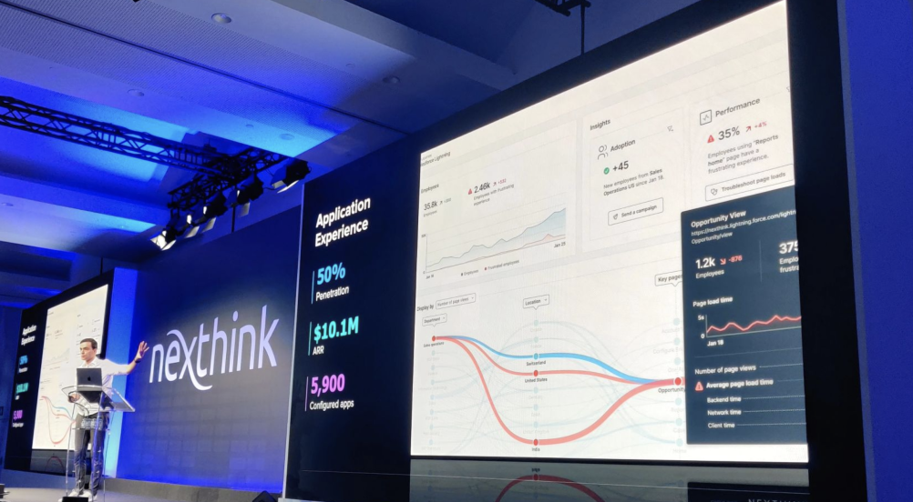
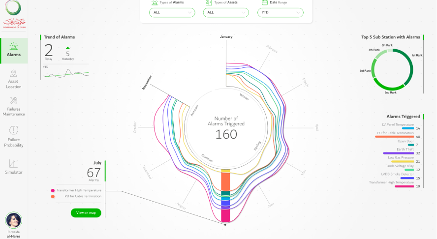
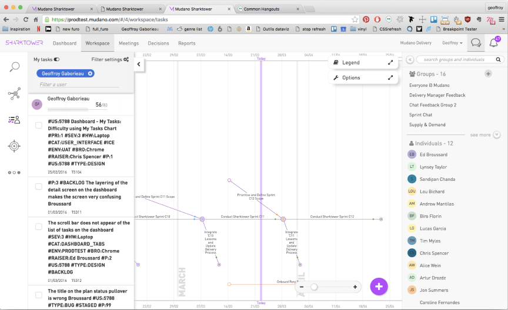
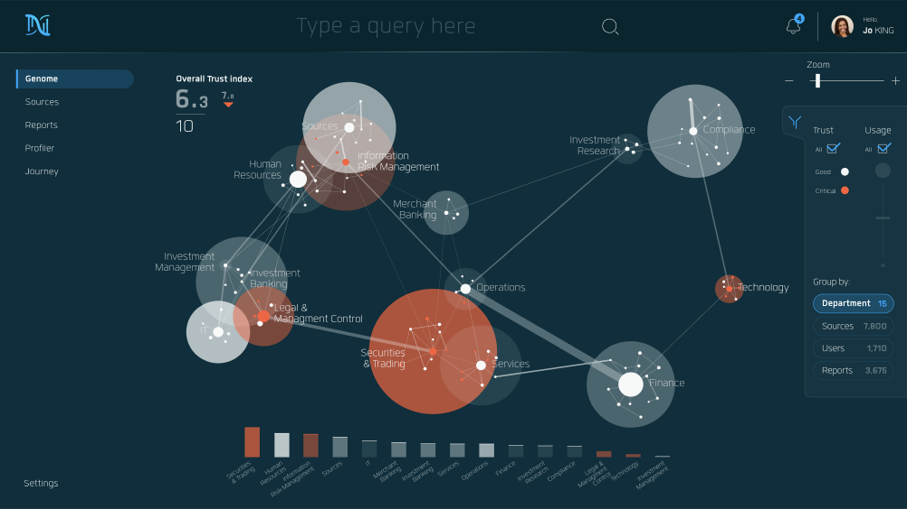
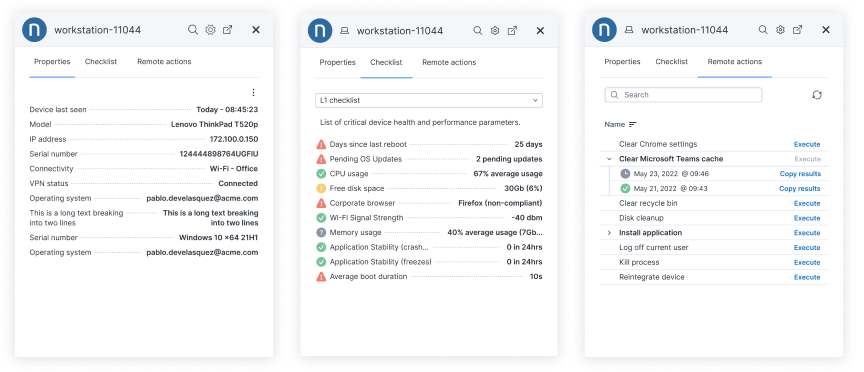
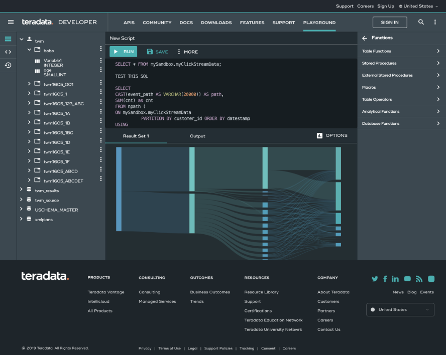
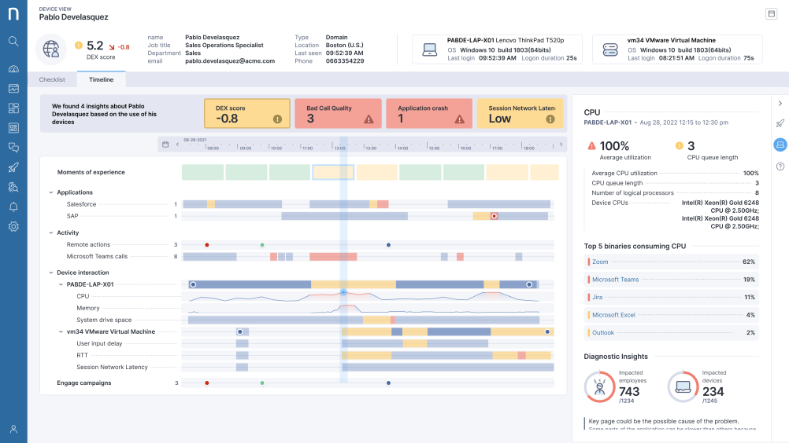
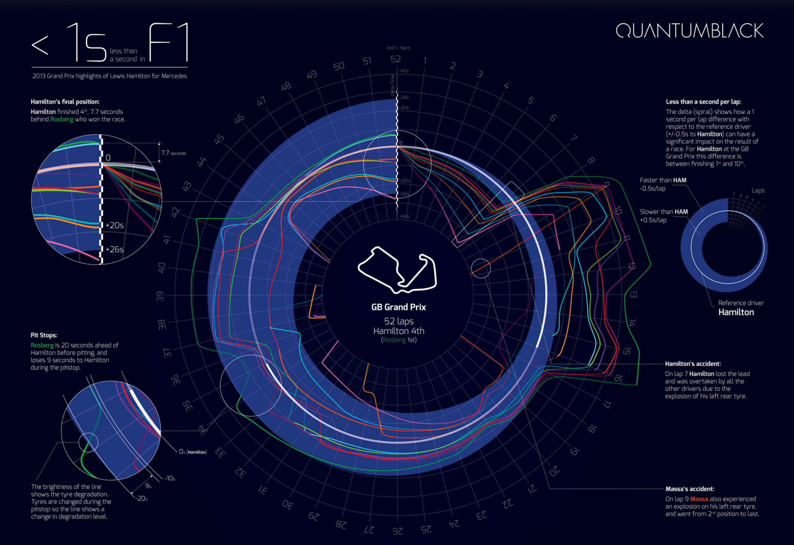

With over 21 years of experience, our studio has a proven track record in driving innovative design strategies and leading cross-functional teams. Our expertise spans UX/UI design, product development, and data visualization, making us ideally suited to lead the design efforts of a dynamic startup.







